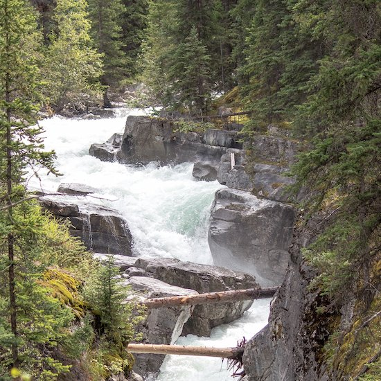
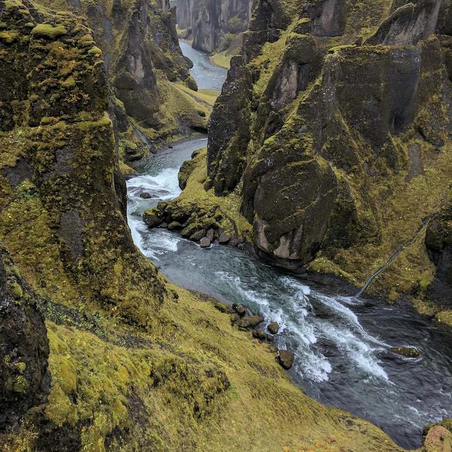
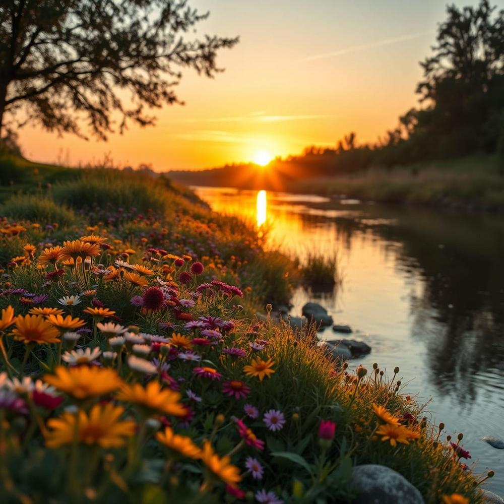
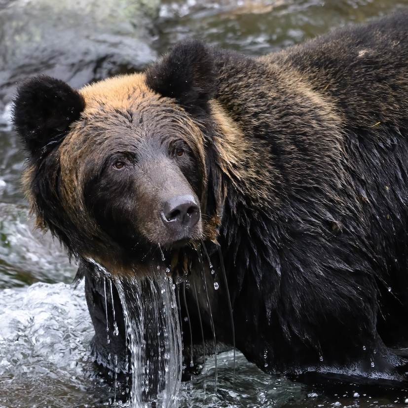

Choose Your Adventure!

Stonebreaker Rapids
Intermediate · 3 hours
Get ready for splashing waves, powerful rapids, and big drops! This trip is perfect for guests who want an exciting challenge while working together as a team.

Canyon Run
Beginner-friendly · 2.5 hours
Explore winding canyon scenery and gentle rapids on a fun introduction to rafting. Enjoy the views, learn basic paddling skills, and experience the river with a guide.

Pinewater Adventure
Beginner-friendly · 2 hours
Drift along a forest-lined river surrounded by beautiful pine trees and mountain scenery. Gentle rapids make this a relaxing way for first-time rafters to enjoy the outdoors.

Sunset Float
Beginner-friendly · 1.5 hours
Unwind on a peaceful evening float as golden sunlight reflects across the water. It's a lovely choice for families and friends who want a slower-paced river experience.

Wildlife Expedition
Moderately easy · 2.5 hours
Explore a quieter river stretch while watching for birds and other wildlife. Combine gentle paddling, nature watching, and beautiful views on this outdoors-focused adventure.
Compare Our Trips
| Trip | Difficulty | Duration | Experience |
|---|---|---|---|
| Stonebreaker Rapids | Intermediate | 3 hours | Exciting rapids |
| Canyon Run | Beginner-friendly | 2.5 hours | Canyon scenery |
| Pinewater Adventure | Beginner-friendly | 2 hours | Forest scenery |
| Sunset Float | Beginner-friendly | 1.5 hours | Peaceful evening float |
| Wildlife Expedition | Moderately easy | 2.5 hours | Wildlife and nature |
Have questions about our rafting trips?
Contact us, and we'll get back to you within 24 hours!
Contact us here!